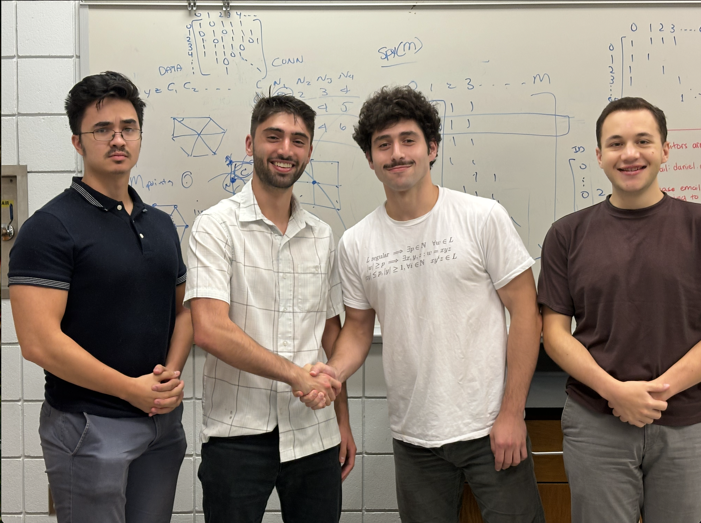

About
I'm a second-year Ph.D. Candidate in Computer Science and Engineering (CSE) Division within the Electrical Engineering and Computer Science (EECS) Department at the University of Michigan. There, I'm a member of the Strategic Reasoning Group in the AI Lab. I am extremely fortunate to be advised by Prof. Michael Wellman. I hold dual US and EU citizenship.
I completed my undergraduate studies at Lafayette College where I studied Math-Economics and Statistics-Data Science (2021) and received my M.S. in Computer Science from Tufts University (2024). During my master's, I balanced full-time industry work with academic research.
During Spring and Summer 2024, I worked as a research fellow for the Air Force Research Lab (AFRL), collaborating with the AI & Autonomous Decision Making Group and the Control Science Center on differential game theory, pursuit-evasion games, GNNs, and graph theory, hosted by Dr. Scott Nivison.
During spring and summer 2026, I'll be a visiting researcher at the ELLIS Institute Tübingen and the Max Planck Institute for Intelligent Systems in Germany, working with Prof. Celestine Mendler-Dünner and the Algorithms and Society group.
My industry experience includes 2.5 years as a software engineer at Capital One on their Low Latency Data Store team, developing software for real-time credit card fraud detection, and working as a Quantitative Researcher in fixed income at Jefferies.
Research Interests
I'm broadly interested in understanding and developing safe multi-agent systems, as well as analyzing the strategic behavior of agents (AI and non-AI) in these settings either computationally or analytically. I find myself often working at some intersection between game theory/mechanism design, RL, interpretability, optimization, and learning theory.

A memento from my time with the AFRL.
News
- Feb 2026 Placed 1st (out of 3000) in the AgentX–AgentBeats Competition (Green Agent), hosted by Berkeley RDI (UC Berkeley)! Read about it here!
- Feb 2026 Our paper "Measuring Competition and Cooperation in LLM Bargaining: An Empirical Meta-Game Analysis," was accepted for presentation at the National Bureau of Economic Research (NBER) Conference on Econometrics and Mathematical Economics (CEME).
- Nov 2025 Presented at ICAIF 2025 in Singapore.
- Oct 2025 Passed my preliminary exam, officially a PhD candidate!
- Sep 2025 Our paper "Matching at the Midpoint: A Strategic Agent-Based Analysis" was accepted to the ACM International Conference on AI in Finance 2025 (ICAIF).
- Jul 2025 Will be attending ICML in Vancouver to present research at the Multi-Agent Systems workshop.
- Jul 2025 Will be attending the Cooperative AI Summer School in London.
- May 2025 Will be presenting my AFRL research at AAMAS 2025.
- Aug 2024 Started my PhD in EECS at the University of Michigan, joining the AI Lab.
- May 2024 Graduated from my Master's program at Tufts University.
- Mar 2024 Started my research fellowship at AFRL, working on differential game theory and GNNs.